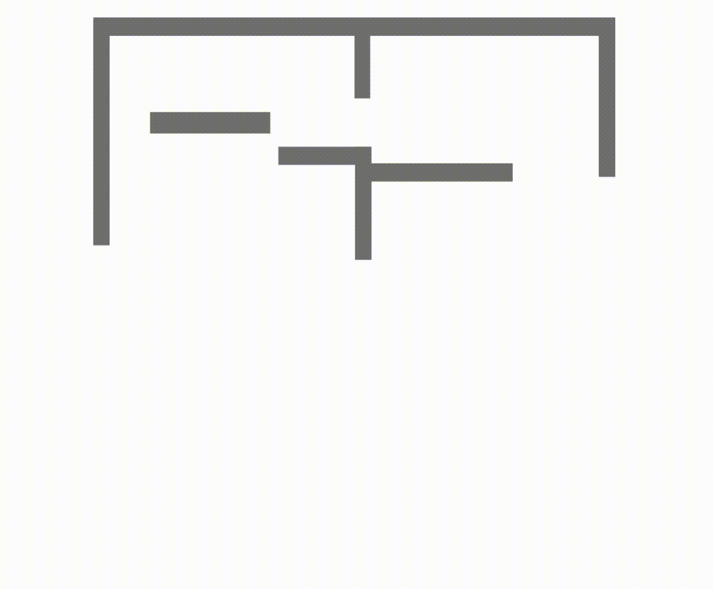

Autonomous exploration in unknown environments requires estimating the information gain of an action to guide planning decisions. While prior approaches often compute information gain at discrete waypoints, pathwise integration offers a more comprehensive estimation but is often computationally challenging or infeasible and prone to overestimation. In this work, we propose the Pathwise Information Gain with Map Prediction for Exploration (PIPE) planner, which integrates cumulative sensor coverage along planned trajectories while leveraging map prediction to mitigate overestimation. To enable efficient pathwise coverage computation, we introduce a method to efficiently calculate the expected observation mask along the planned path, significantly reducing computational overhead. We validate PIPE on real-world floorplan datasets, demonstrating its superior performance over state-of-the-art baselines. Our results highlight the benefits of integrating predictive mapping with pathwise information gain for efficient and informed exploration.
The core component of PIPE planner is to estimate information gain of each frontier, by integrating cumulative sensor coverage (estimated by raycasts) along each path. But this is computationally expensive. How do we compute the cumulative information gain efficiently?
Rather than performing a flood fill operation seprately for each raycast-generated polygon and then taking the union of the visibility masks, we first merge the raycast-generated polygons into one and apply a single flood fill operation to the merged polygon. We leverage computational geometry to address union of multiple nonconvex raycasted polygons (trapped regions or holes).
The robot extracts frontiers from its observed occupancy grid map and generates predicted maps. For each frontier, PIPE estimates path-integrated sensor coverage and generates a visibility mask for the full path. It computes pathwise information gain by summing the pixelwise variance of predictions within the visibility mask. The robot then selects the frontier with the highest information gain for exploration planning.
@article{baek2025pipe,
title={PIPE Planner: Pathwise Information Gain with Map Predictions for Indoor Robot Exploration},
author={Baek, Seungjae and Moon, Brady and Kim, Seungchan and Cao, Muqing and Ho, Cherie and Scherer, Sebastian and others},
journal={arXiv preprint arXiv:2503.07504},
year={2025}
}